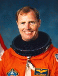

Lyndon B. Johnson Space Center
Houston, Texas 77058
|
National Aeronautics and Space Administration Lyndon B. Johnson Space Center Houston, Texas 77058 |
 |
Biographical Data |
||
DAVID M. WALKER (CAPTAIN, USN, RET.)
NASA ASTRONAUT (DECEASED)
PERSONAL DATA: Born May 20, 1944, in Columbus, Georgia. Died on April 23, 2001, while being treated at University of Texas M.D. Anderson Cancer Center in Houston, Texas. He is survived by his wife, the former Paige Lucas, and two grown sons.
EDUCATION: Graduated from Eustis High School, Eustis, Florida, in 1962; received a bachelor of science degree from the United States Naval Academy in 1966.
SPECIAL HONORS: Awarded the Defense Superior Service Medal, the Distinguished Flying Cross, the National Intelligence Medal of Achievement, the Legion of Merit, two Defense Meritorious Service Medals, six Navy Air Medals, the Battle Efficiency Ribbon, the Armed Forces Expeditionary Medal, the National Defense Service Medal, two NASA Distinguished Service Medals, the NASA Outstanding Leadership Medal, four NASA Space Flight Medals, the Vietnamese Cross of Gallantry, the Vietnam Service Medal, and the Republic of Vietnam Campaign Medal.
ORGANIZATIONS: Associate Fellow of the Society of Experimental Test Pilots. Senior Member of the American Institute of Aeronautics and Astronautics. Member of the Naval Academy Alumni Association, and the Eagle Scout Association.
EXPERIENCE: Walker was graduated from Annapolis and subsequently received flight training from the Naval Aviation Training Command at bases in Florida, Mississippi, and Texas. He was designated a naval aviator in December 1967 and proceeded to Naval Air Station Miramar, California, for assignment to F-4 Phantoms aboard the carriers USS Enterprise and USS America. From December 1970 to 1971, he attended the USAF Aerospace Research Pilot School at Edwards Air Force Base, California, and was subsequently assigned in January 1972 as an experimental and engineering test pilot in the flight test division at the Naval Air Test Center, Patuxent River, Maryland. While there, he participated in the Navys preliminary evaluation and Board of Inspection and Survey trials of the F-14 Tomcat and tested a leading edge slat modification to the F-4 Phantom. He then attended the U.S. Navy Safety Officer School at Monterey, California, and completed replacement pilot training in the F-14 Tomcat at Naval Air Station Miramar, California. In 1975, Walker was assigned to Fighter Squadron 142, stationed at Naval Air Station Oceana, Virginia, as a fighter pilot and was deployed to the Mediterranean Sea twice aboard the USS America.
He has logged more than 7500 hours flying time--over 6500 hours in jet aircraft.
NASA EXPERIENCE: Selected by NASA in January 1978, Walker became an astronaut in August 1979. Among his technical assignments he served as Astronaut Office Safety Officer; Deputy Chief of Aircraft Operations; STS-1 chase pilot; software verification at the Shuttle Avionics Integration Laboratory (SAIL); mission support group leader for STS-5 and STS-6; Assistant to the Director, Flight Crew Operations; leader of the astronaut support crew at Kennedy Space Center; Branch Chief, Space Station Design and Development; and Special Manager for Assembly, Space Station Project Office. From July 1993 to June 1994, Walker was Chief of the Station/Exploration Support Office, Flight Crew Operations Directorate, after which he chaired the JSC Safety Review Board.
A veteran of four space flights, Walker has logged over 724 hours in space. He was the pilot on STS 51-A in 1984, and was the mission commander on STS-30 in 1989, STS-53 in 1992 and STS-69 in 1995.
Walker left NASA in April 1996 to become Vice President, Sales & Marketing, for NDC Voice Corporation in Southern California.
SPACE FLIGHT EXPERIENCE: STS 51-A Discovery (November 8-16, 1984) was launched from and returned to land at Kennedy Space Center, Florida.. During the mission the crew deployed two satellites, Canadas Anik D-2 (Telesat H), and Hughes LEASAT-1 (Syncom IV-1). In the first space salvage mission in history the crew also retrieved for return to Earth the Palapa B-2 and Westar VI satellites. Mission duration was 127 Earth orbits in 7 days, 23 hours, 44 minutes, 56 seconds.
STS-30 Atlantis (May 4-8, 1989) was launched from Kennedy Space Center, Florida. During the 4-day mission the crew successfully deployed the Magellan Venus-exploration spacecraft, the first U.S. planetary science mission launched since 1978, and the first planetary probe to be deployed from the Shuttle. Magellan arrived at Venus in August 1990, and mapped over 95% of the surface of Venus. In addition, the crew also worked on secondary payloads involving fluid research in general, chemistry, and electrical storm studies. Following 64 orbits of the Earth, the STS-30 mission concluded with the first cross-wind landing test of the Shuttle Orbiter at Edwards Air Force Base, California.
STS-53 Discovery (December 2-9, 1992) was launched from the Kennedy Space Center, Florida, and also returned to land at Edwards Air Force Base, California. During 115 Earth orbits the five-man crew deployed a classified Department of Defense payload DOD-1 and then performed several Military-Man-in-Space and NASA experiments. Mission duration was 175 hours, 19 minutes, 17 seconds.
STS-69 Endeavour (September 7-18, 1995) was launched from and returned to land at Kennedy Space Center, Florida. During the mission the crew successfully deployed and retrieved a SPARTAN satellite and the Wake Shield Facility. Also on board was the International Extreme Ultraviolet Hitchhiker payload, and numerous secondary payloads and medical experiments. Mission duration was 10-days, 20 hours, 28 minutes.
APRIL 2001
{kind=link}